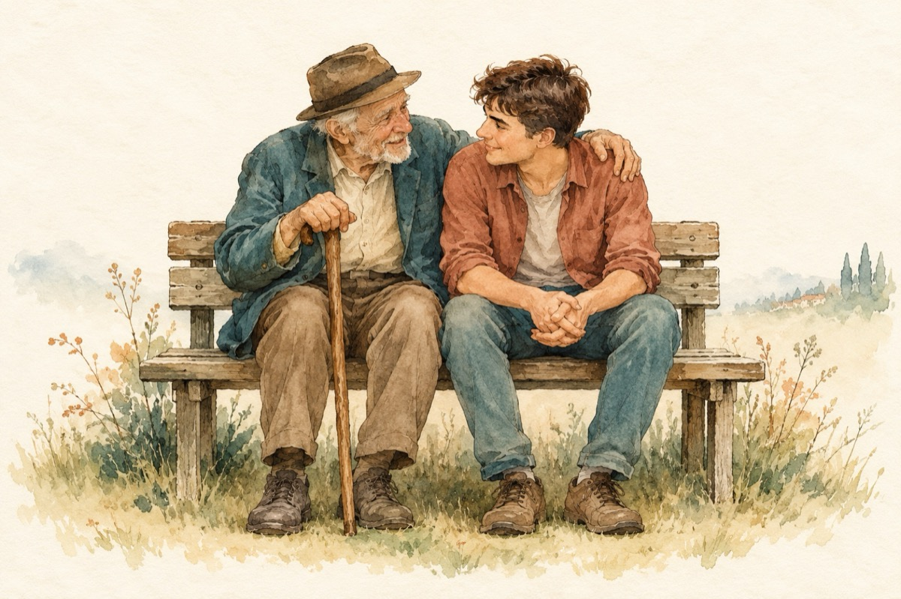

Tataie
Sprijină-te de umărul meu tataie,
Și pune-ți pașii-n baston,
Alină-ți nespusa durere de șale,
Du-te-n copilărie noaptea prin somn!
Și zburdă cu mieii laolaltă.
Joacă ascunsa și ține zmeul de sfoară
Dă-te de-a tumba prin iarbă
Nu te gândi că bătrânețea e-o povară!...
Așează-ți anii strânși cu de toate
Amintirile frumoase, tristețea să treacă,
Niciodată nu-i prea târziu, se poate!
Așează-te tataie să vorbim ici pe bancă!
Anii sunt grei, ei merg înainte ca pe făgaș,
Cu tine, fără tine, n-are importanță
Important este, în urma ta ce lași??...
Aceasta este esența în viață!
Vasile Groza